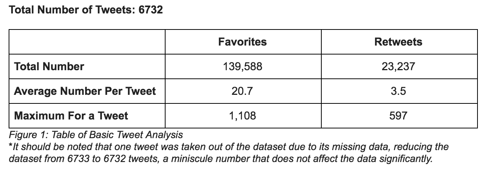
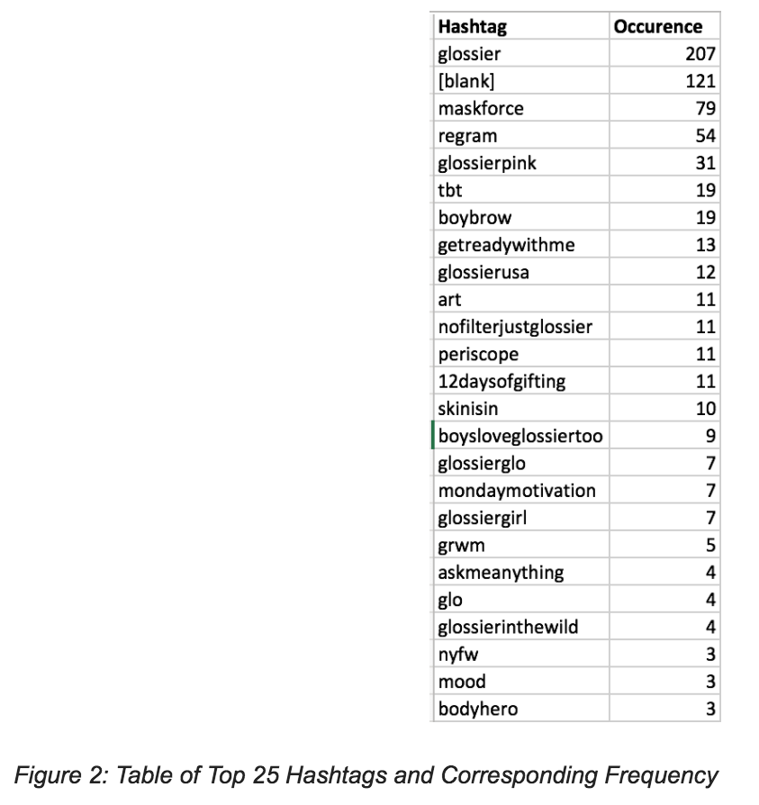
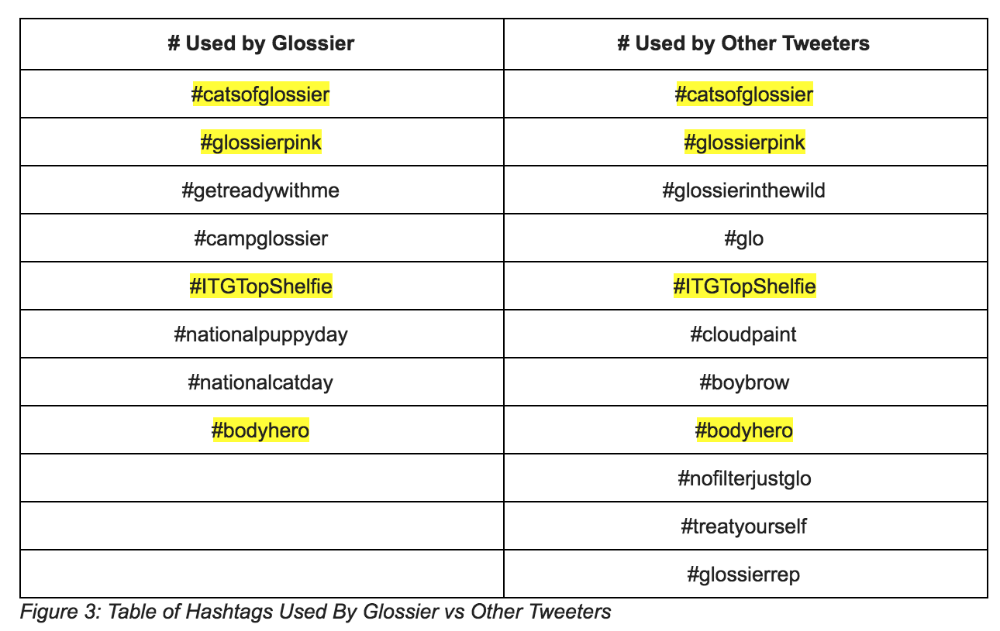
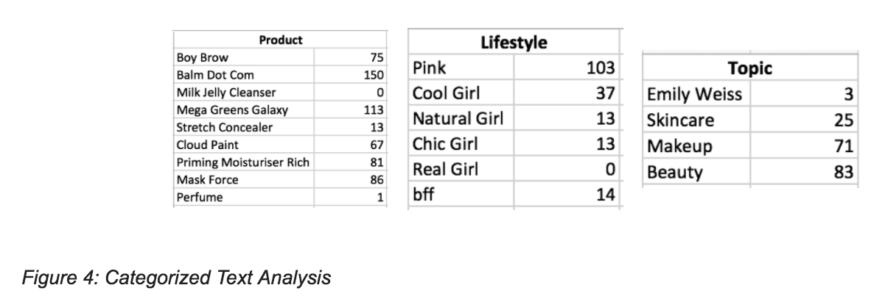

A Case Study on Glossier's Social Media Marketing Strategy
#Results
Basic Tweet AnalysisWe performed basic tweet analysis using Python scripts (link to code in Appendix A). Focusing on Glossier account-related tweets, we calculated the following:
Based on the above table, we found that these tweets are more likely to be favorited than to be retweeted, possibly due to their text-heavy nature, which renders them less likely to be (re)shared among users as a result of lack of interest and impact - as compared to image-heavy posts like those found on Instagram. Another reason is the expression-based nature of Twitter, which places emphasis on retweets and posts as a user's strong opinion, while favorites merely imply agreement and/or interest. As such, unless a Tweeter believes strongly in another user's Tweet and espouses drastically similar sentiments, she is unlikely to retweet. Lastly, upon further inspection of the data, it seems that a majority of the retweets were done by Glossier on user posts that raved about their products, suggesting that Glossier utilizes Twitter as a customer interaction space while users are likely just following relevant new posts and creating original posts about Glossier.
To gain an understanding of what might induce favorites and retweets in a Glossier-related post, we identified the tweets with max favorite and max retweet. By cross-referencing the JSON and CSV files, we discovered that the most favorited tweet of 1,108 favorites was posted by Glossier themselves, and included an image of the newly-launched product, Body Hero collection, as well as the corresponding campaign posters featuring women of all ethnicities and body shapes, completed with a link to the product purchasing page. These observations indicate that users are attracted to either the new product launch or the inclusive, body-celebrating ad campaign, or both. Reading the 27 comments as well as articles related to Body Hero, we conclude that the popularity of this post is mainly due to the inclusive campaign (Capon; Nussbaum). The most retweeted post of 597 retweets was a again, posted by Glossier themselves, consisting of an image with 10 motivational tips on how to work better, with a glossier pink hue. This result suggests that Glossier's tactic of posting simple, aesthetic, and relatable images succeed in visually hooking user attention.
Taken together, a basic tweet analysis yields results that seem to answer this part of our research question: what tactics used seem to be attributable to the company's success? Our findings point to the inclusive, relatable ad campaigns and image posts, both of which are heavy in the visual department. In addition, it revealed Glossier's communication interaction tactic using Twitter, which is something we will explore deeper in the next section of text analysis.
Hashtag AnalysisFor hashtag analysis, we wanted to uncover the most popular folksonomy and whether hashtags used by Glossier overlap with those regularly used by others. These findings will enable us to determine to some degree what drives Glossier's popularity.
We used Python to classify all the unique hashtags, count the number of times each occurs, and sort them in descending order. Our top 25 results (of 136 hashtags and excluding stopwords) are as follows:
As we see from the table, the 25 most popular hashtags deal more with appreciation of Glossier in general and its culture, rather than with specific products or topics. This is shown with hashtags like glossier, glossierpink, getreadywithme, and 12daysofgifting, referring to general Glossier concepts, signature characteristics, well-known activity of short makeup routine videos, and Glossier's holiday sweepstake, respectively.
Going into more detail, the hashtags with the largest occurrences are in the top 5, in decreasing order: #glossier which uses the name of the company, blank hashtags which may be attributed to foreign languages that were not interpreted or user-related errors, #maskforce which is a popular beauty product from Glossier's Mega Greens Galaxy Pack collection, #regram which refers to reposts of Instagram images, and #glossierpink which is the company's signature pink hue. Based on these results, the generality of hashtags is supported as there is only one product-related top hashtag as compared to non-product-related hashtags.
However, this observation alone is inadequate in making more conclusive deductions about what drives Glossier's popularity. For a comprehensive analysis, we identified common hashtags used by Glossier versus those used by other tweeters.
As shown in the table, Glossier's common hashtags are more event and concept based rather than product based, while other tweeters have more product based hashtags. This difference may be explained by the goals of the two groups: Glossier's goal is to profit and expand, by attracting new customers and maintaining the current customer base, while nor=mal tweeters want to share their opinions of select topics, including Glossier and its products. As such, it makes sense that Glossier will focus on hashtags that help create hashtagged communities consisting of coordinated and unique experiences like the annual #campglossier retreat and opportunity to be featured on Glossier's blog with #ITGTopShelfie. On the other hand, non-company-affiliated tweeters focus on sharing reactions about services that Glossier provides, which consequently are makeup and skincare products. Despite the experience versus product hashtag differences, there are overlaps between the two groups, as tweeters pick up on and participate in the concepts and experiences pushed out by Glossier.
By analyzing the hashtags, we were able to answer this aspect of our research question: according to folksonomy, what are attractive characteristics and aspects of Glossier that contribute to its popularity and reach? The answer, from hashtags, points to the well-defined and unique communities/events created as strong reasons why Glossier following is so successful and faddish, as shown by the overlaps.
Text AnalysisThrough text analysis, we wanted to uncover how Glossier and its customers interacted, and whether Glossier's following is more product or lifestyle-based. To do this, we used Python scripts to pull up a sample of 3181 out of the 6732 tweets, searched for specific keywords in the text key value, and manually perused the results. In addition, we also searched for keywords present in both hashtags and text of each tweet to determine the overall frequency of common Glossier-related words. Our Python code took into account text variations, as people might use various spellings, nicknames, and spacing. However, we did not take into account misspellings or foreign language equivalents as it is beyond the scope of our project and not needed for our purposes. Three examples of the variations are shown below:
1. strings_to_search_for = ["pink", "glossierpink", "glossier pink"]
2. strings_to_search_for = ["cool", "coolgirl", "cool girl"]
3. strings_to_search_for = ["mega greens", "mega green", "megagreens", "megagreen", "mega greens galaxy", "megagreens galaxy", "mega green galaxy", "megagreen galaxy"]
As a result of hand-selected keyword searches, we came up with three categories to capture our findings:
The results above reflect the keywords our team considered crucial to Glossier's identity and services, and were inspired by articles about Glossier and its cult-like followers (Social Bearing; Tiku). The category "product" is meant to inform whether impact is product-driven; the category "lifestyle" is meant to inform whether impact is due to culture and vibe exuded; the category "topic" is meant to inform of a more neutral stance. Based on the numbers, it seems that the customer following of Glossier is overwhelmingly product-based. The numbers for "lifestyle" show that "pink" is most popular while other girl power word choices are more sparse. We deduce that followers might identify with girl power keywords but are more likely to utilize words that are more directly related and prevalent when one thinks about the Glossier brand, which in this case would be the theme of "pink." The numbers for "topic" are quite high compared to those in "lifestyle," however, we conclude that this might be due to the highly broad nature of the words we have chosen. Thus, we believe the more important categories are "product" and "lifestyle."
To take this a step further, we pulled the text from tweets with the keywords shown, and noticed some patterns in text-based Glossier-customer interactions. Glossier's texts mainly involve promotional information or responses to customer complaints and compliments, as shown with the following selected texts:
"Sorry to hear that! DM us with your order number and we can help."
"Not to worry, that can happen due to the natural oils in the Balm Dotcom! Gently massage the tube to remix."
"Excited and honored to be one of LinkedInTopCompanies this year!"
"DM us a selfie and we can recommend a shade. :)"
"We're excited to be shipping to the U.K. later this autumn! Stay tuned for more updates."
Evident from the examples, Glossier employes Twitter to convey important milestones, address customer concerns, and provide direct and personal customer service.
For followers, their texts mainly involve discussions around the products, either with compliments or concerns, or by repping the merchandise; their posts are more opinion-based and product-centric, as opposed to reactive and brand-centric:
"The glossier perfume smells like the me that i strive to be."
"I got boy brow, and now I get boy brow."
Combined with the hashtag results in the previous section, we conclude that followers are generally hyped and loyal to Glossier because of their satisfaction with the product offerings and other services provided. The willingness and proactiveness of Glossier's social media reach ensures that customers are not left hanging and instead, have access to assistance of all kinds when needed.
By analyzing the texts, we were able to determine whether the following and hype is product-based or lifestyle-based. The answer, when combined with hashtags, points to product-based but with additional attraction due to the inclusive but unique events and marketing tactics applied.